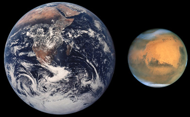
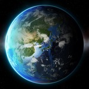
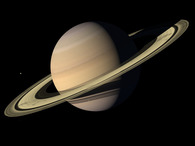
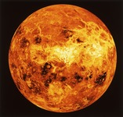
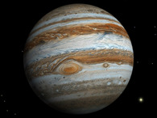

Привет, землянин!
- Переселись на другую планету
- Здесь больше места
- Забери всех своих друзей
- Есть вода


Физические характеристики
Красная планета располагает тонким атмосферным слоем, который представлен углекислым газом (96%), аргоном (1.93%), азотом (1.89%) и примесями кислорода с водой. В ней много пыли, размер которой достигает 1.5 микрометра. Давление – 0.4-0.87 кПа.
Большое расстояние от Солнца к планете и тонкая атмосфера привели к тому, что температура Марса низкая. Она скачет между -46°C до -143°C зимой и может прогреваться до 35°C летом на полюсах и в полдень на экваториальной линии.
Соседние планеты

Земля
Третья по счету планета от Солнца, которая находится на внешнем краю галактики Млечный путь в области рукава Ориона. На данный момент Земля – единственный известный нам астрономический объект, населенный живыми организмами.

Сатурн
Шестая планета от Солнца и вторая по размерам планета в Солнечной системе после Юпитера. Сатурн, а также Юпитер, Уран и Нептун, классифицируются как планеты-гиганты.

Венера
Вторая по удалённости от Солнца и шестая по размеру планета Солнечной системы, наряду с Меркурием, Землёй и Марсом принадлежащая к семейству планет земной группы.

Юпитер
Крупнейшая планета Солнечной системы, пятая по удалённости от Солнца. Наряду с Сатурном, Ураном и Нептуном, Юпитер классифицируется как газовый гигант.
Интересные факты
Факт
№1
На поверхности Марса находится каньон «Долина Меринера», который во много раз длиннее и глубже Большого Каньона в Северной Америке.
Узнать подробнее
Факт
№2
Никто из людей или животных не выжил бы на Марсе без специального скафандра. Давление на Марсе настолько низкое, что кислород в крови мгновенно превратился бы в газовые пузырьки, что привело бы к моментальной гибели.
Узнать подробнее
Факт
№3
У Марса есть 2 небольших луны – Деймос (с греческого – «ужас») и Фобос («страх»), первый из которых всходит на западе и садится на востоке два раза в сутки, второй – с другой стороны, и ему требуется 2,7 суток, чтобы встать на востоке и сесть на западе.
Узнать подробнее